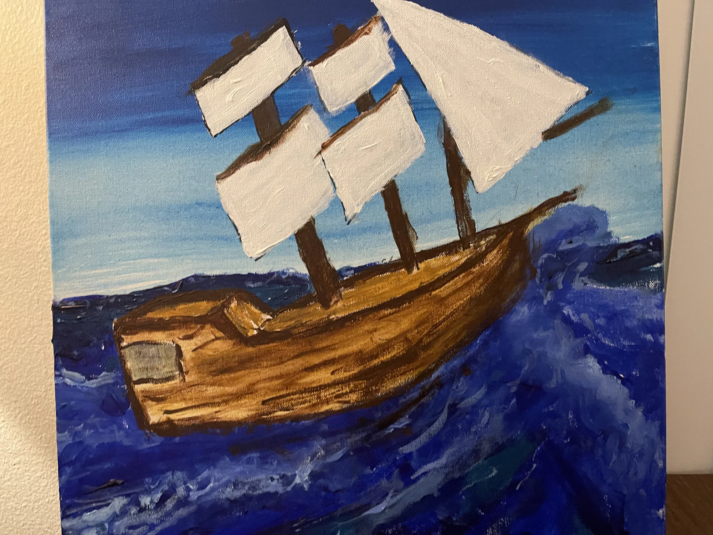
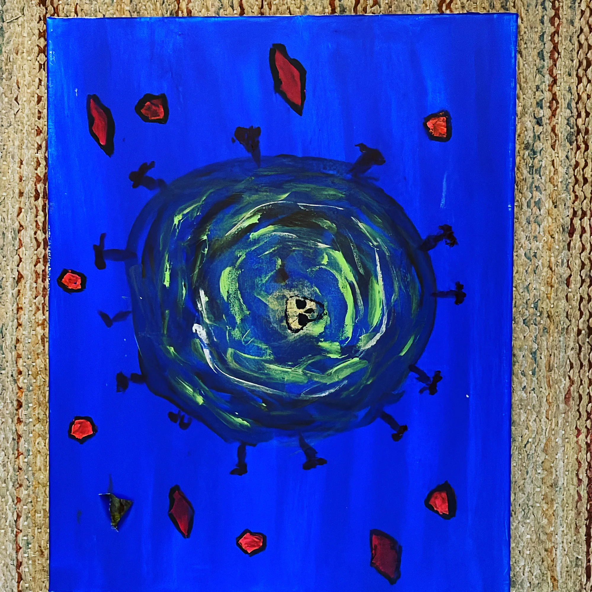
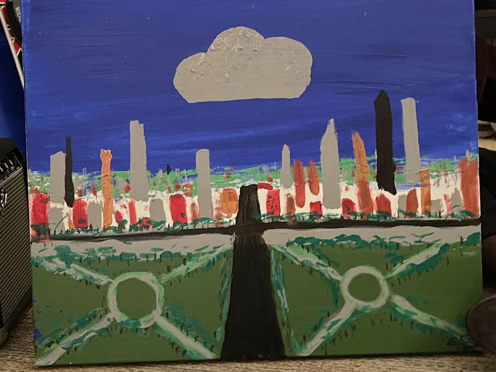
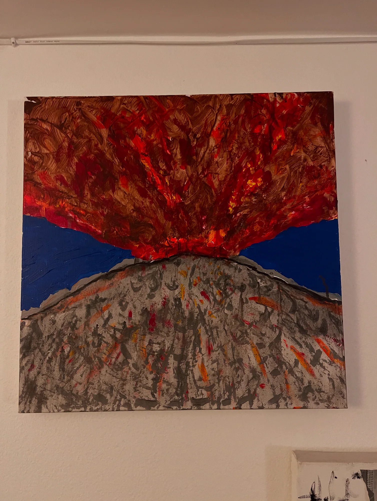
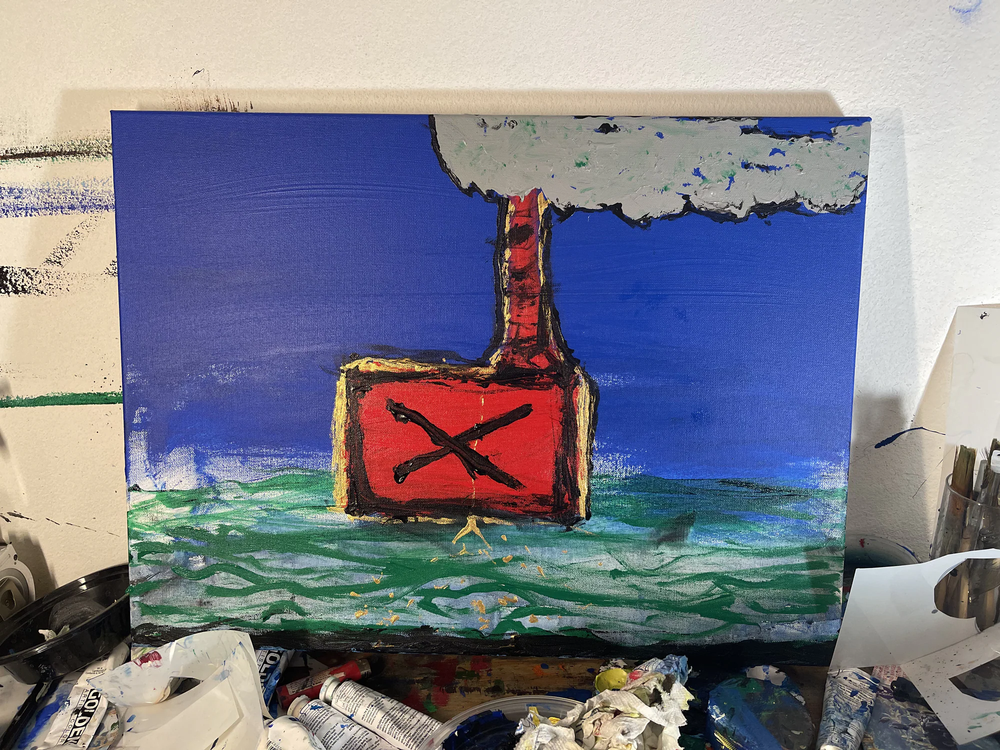
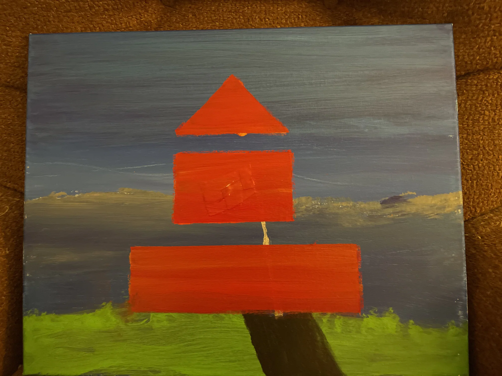
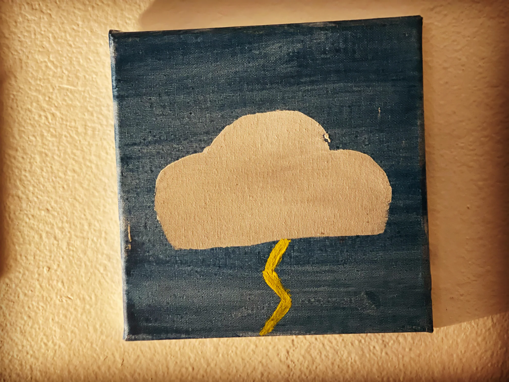
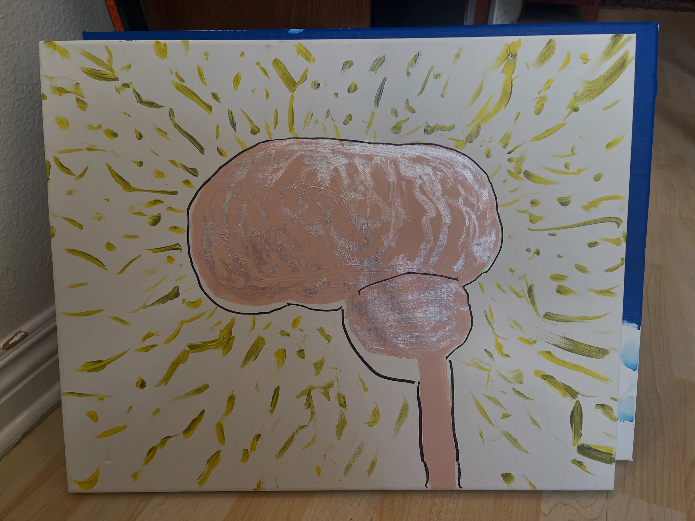

08 selected works / A personal collection
Color in
rough water.
Paintings built from instinct, texture, patience, and the occasional beautiful accident.
01 / THE COLLECTION
Weather, symbols,
and inner worlds.
Ships, storms, cities, and the mind itself—a selection of original works drawn together by saturated color and an appetite for motion.







02 / THE EDIT
The archive was large.
The final choice stayed human.
A private local curator searched thousands of images for photographed paintings. Repeated views and studio snapshots were set aside so each work here can hold the frame on its own.
01 Original work02 Full view03 Strong image04 One clear frame